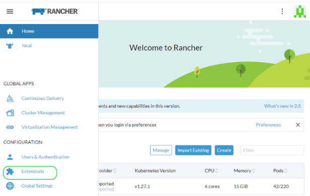

Ampliación de Rancher
Desplegar y gestionar SUSE® Security a través de las extensiones de Rancher o de las aplicaciones y mercado de Rancher
SUSE® Security se puede ampliar fácilmente, ya sea a través de las extensiones de Rancher para clientes Prime o de las aplicaciones y mercado de Rancher. La ampliación predeterminada (basada en Helm) de SUSE® Security desplegará SUSE® Security contenedores en el espacio de nombres cattle-neuvector-system.
|
Solo las ampliaciones de SUSE® Security a través de las extensiones de Rancher (SUSE® Security) de la versión 2.7.0+ de Rancher, o de las aplicaciones y mercado de la versión 2.6.5+ de Rancher, se pueden gestionar directamente (inicio de sesión único en la consola de SUSE® Security) a través de Rancher. Si se añaden clústeres a Rancher con SUSE® Security ya desplegado, o donde SUSE® Security ha sido desplegado directamente en el clúster, estos clústeres no estarán habilitados para la integración SSO. |
Extensión de UI de SUSE® Security para Rancher
Los clientes Prime de Rancher pueden desplegar fácilmente SUSE® Security y la extensión de UI de SUSE® Security para Rancher. Esto permitirá a los usuarios Prime monitorizar y gestionar ciertas funciones y eventos de SUSE® Security directamente a través de la UI de Rancher. Para usuarios de la comunidad, por favor consulta la sección Desplegar SUSE® Security a continuación para desplegar desde las aplicaciones y mercado de Rancher.
-
El primer paso es habilitar la capacidad de extensiones de Rancher globalmente si no está ya habilitada.


-
Instala el SUSE® Security-UI-Ext de la lista disponible

-
Vuelve a cargar la extensión una vez que la instalación esté completada

-
En tu clúster seleccionado, instala la aplicación SUSE® Security desde la pestaña SUSE® Security si la aplicación SUSE® Security no está ya instalada. Esto debería llevarte a los pasos de instalación de la aplicación. Para más detalles sobre este proceso de instalación, consulta la sección Desplegar SUSE® Security a continuación.

-
El SUSE® Security panel de control debería mostrarse ahora en el menú SUSE® Security para ese clúster. Desde este panel de control, se puede monitorear un resumen de la salud de seguridad del clúster. Hay elementos interactivos en el panel de control, como invocar un asistente para Mejorar Tu Puntuación (de Riesgo de Seguridad), incluyendo la posibilidad de activar el escaneo automatizado de vulnerabilidades si no está habilitado.

Además, los enlaces en la parte superior derecha del panel de control proporcionan enlaces convenientes de inicio de sesión único (SSO) a la consola completa de SUSE® Security para un análisis y configuración más detallados.
-
Para desinstalar la extensión, vuelve a la página de Extensiones

Desinstalar la extensión de la interfaz de usuario SUSE® Security NO desinstalará la aplicación SUSE® Security de cada clúster. El menú SUSE® Security volverá a proporcionar un enlace SSO a la consola SUSE® Security.
Desplegar SUSE® Security
Primero, encuentra el gráfico SUSE® Security en los gráficos de Rancher, selecciónalo y revisa las instrucciones y varios valores de configuración. (Opcional) Crea un proyecto para desplegar si lo deseas, por ejemplo, SUSE® Security. Nota: Si ves más de un gráfico SUSE® Security, no selecciones el que es para actualizar ampliaciones de gráficos Helm heredados SUSE® Security 4.x.

Despliega el gráfico SUSE® Security, configurando primero los valores apropiados para una ampliación de Rancher, tales como:
-
Tiempo de ejecución del contenedor, por ejemplo, docker para RKE y containerd para RKE2, o selecciona el valor K3s si usas K3s.
-
Tipo de servicio del gestor: cambia a LoadBalancer si está disponible en ampliaciones en la nube pública. Si solo se desea acceso a través de Rancher, cualquier valor permitido funcionará aquí. Vea la nota importante a continuación sobre cómo cambiar la contraseña de administrador predeterminada en SUSE® Security.
-
Indique si este clúster será un Primario federado de múltiples clústeres, o remoto (o seleccione ambos si se desea cualquiera de las opciones).
-
Volumen persistente para copias de seguridad de configuración

Haga clic en 'Instalar' después de haber revisado y actualizado los valores del gráfico.
Después de una ampliación SUSE® Security exitosa, verá un resumen de las ampliaciones, conjuntos de daemon y trabajos Cron para SUSE® Security. También podrá ver los servicios desplegados en el menú de Descubrimiento de Servicios a la izquierda.

Administrar SUSE® Security
Ahora verá un elemento de menú SUSE® Security a la izquierda, y seleccionar eso mostrará un mosaico/botón SUSE® Security, que al hacer clic lo llevará a la consola SUSE® Security, en una nueva pestaña.

Cuando se utiliza este método de acceso de Inicio de Sesión Único (SSO) por primera vez, se crea un usuario correspondiente en el clúster SUSE® Security para el inicio de sesión del usuario de Rancher. El mismo nombre de usuario del usuario de Rancher que ha iniciado sesión se creará en SUSE® Security, con un rol de administrador o fedAdmin, y el proveedor de identidad como Rancher.

Nota en la captura de pantalla anterior, dos usuarios de Rancher, admin y gkosaka, han sido creados automáticamente para SSO. Si otro usuario se crea manualmente en SUSE® Security, el proveedor de identidad se enumerará como SUSE® Security, como se muestra a continuación. Este usuario local puede iniciar sesión directamente en la consola SUSE® Security sin pasar por Rancher.

|
Se recomienda iniciar sesión directamente en la consola SUSE® Security como admin/admin para cambiar manualmente la contraseña de administrador a una contraseña fuerte. Esto solo cambiará la contraseña del usuario administrador del proveedor de identidad SUSE® Security (puede ver otro usuario administrador cuyo proveedor de identidad es Rancher). Alternativamente, incluya un ConfigMap como secreto en el despliegue inicial desde Rancher (consulte los valores del gráfico para la configuración de ConfigMap) para establecer la contraseña de administrador predeterminada a una contraseña fuerte. |
Recursos de Permisos de NeuVector/Rancher SSO
La interfaz de usuario de Rancher v2.9.2 permite seleccionar recursos de permisos de NeuVector al crear Global/Cluster/Project/Namespaces roles. Cuando a un usuario de Rancher se le asigna un rol con un recurso de permiso de NeuVector, la sesión SSO de NeuVector del usuario se asigna al respectivo permiso de NeuVector en consecuencia. Esto es para proporcionar a los usuarios SSO roles personalizados distintos de los roles reservados admin/reader/fedAdmin/fedReader.
A continuación se presentan los recursos de permisos mapeados utilizados con los roles Global/Cluster/Project/Namespaces aplicables.
Recursos de Permisos Mapeados para el Rol Global/Cluster
|
Los usuarios necesitarán añadir manualmente * (Verbos) / servicios/proxy (Recurso) a los Roles de |
Grupos de API:
permission.neuvector.com
Verbos:
get // for read-only(i.e. view)
* // for read/write(i.e. modify)Recursos:
NeuVector, Alcance de Clúster
AdmissionControl
Authentication
CI Scan
Cluster
Federation
VulnerabilityNeuVector, Espacio de Nombres
AuditEvents
Authorization
Compliance
Events
Namespace
RegistryScan
RuntimePolicy
RuntimeScan
SecurityEvents
SystemConfigRecursos de Permisos Mapeados para el Rol Project/Namespace
|
Los usuarios necesitarán añadir manualmente * (Verbos) / servicios/proxy (Recurso) a los Roles de |
Grupos de API:
permission.neuvector.com
Verbos:
get // for read-only(i.e. view)
* // for read/write(i.e. modify)Recursos:
NeuVector, Espacio de Nombres
AuditEvents
Authorization
Compliance
Events
Namespace
RegistryScan
RuntimePolicy
RuntimeScan
SecurityEvents
SystemConfigDesactivando SUSE® Security/Rancher SSO
Para desactivar la capacidad de iniciar sesión en SUSE® Security desde Rancher Manager, ve a Configuración → Configuración.

Ampliaciones legadas de Rancher
El archivo de muestra desplegará un gestor y 3 controladores. Se desplegará un ejecutor en cada nodo. Consulta la sección inferior para especificar nodos dedicados de gestor o controlador utilizando etiquetas de nodo. Nota: No se recomienda desplegar (escalar) más de un gestor detrás de un balanceador de carga debido a posibles problemas de estado de sesión.
|
La ampliación en Rancher 2.x/Kubernetes debe seguir la sección de referencia de Kubernetes y/o la ampliación basada en Helm. |
-
Despliega el catálogo docker-compose-dist.yml, los controladores se desplegarán en los nodos etiquetados, los ejecutores se desplegarán en el resto de los nodos. (El archivo de muestra se puede modificar para que los ejecutores solo se desplieguen en los nodos especificados.)
-
Elige uno de los controladores para que el gestor se conecte a él. Modifica el archivo de catálogo del gestor docker-compose-manager.yml, establece CTRL_SERVER_IP en la IP del controlador y luego despliega el catálogo del gestor.
Aquí están los archivos de composición de muestra. Si deseas desplegar solo uno o dos de los componentes, utiliza solo esa sección del archivo.
Archivo de muestra de composición de Rancher Manager/Controller/Enforcer:
manager:
scale: 1
image: neuvector/manager
restart: always
environment:
- CTRL_SERVER_IP=controller
ports:
- 8443:8443
controller:
scale: 3
image: neuvector/controller
restart: always
privileged: true
environment:
- CLUSTER_JOIN_ADDR=controller
volumes:
- /var/run/docker.sock:/var/run/docker.sock
- /proc:/host/proc:ro
- /sys/fs/cgroup:/host/cgroup:ro
- /var/neuvector:/var/neuvector
enforcer:
image: neuvector/enforcer
pid: host
restart: always
privileged: true
environment:
- CLUSTER_JOIN_ADDR=controller
volumes:
- /lib/modules:/lib/modules
- /var/run/docker.sock:/var/run/docker.sock
- /proc:/host/proc:ro
- /sys/fs/cgroup/:/host/cgroup/:ro
labels:
io.rancher.scheduler.global: trueDesplegar sin modo privilegiado
En algunos sistemas, se admite la ampliación sin utilizar el modo privilegiado. Estos sistemas deben soportar la capacidad de añadir capacidades utilizando la configuración cap_add y de establecer el perfil de apparmor.
Consulta las secciones sobre la ampliación con Docker-Compose, Docker UCP/Datacenter para archivos de composición de muestra.
Aquí tienes un archivo de composición de Rancher de muestra para la ampliación sin modo privilegiado:
manager:
scale: 1
image: neuvector/manager
restart: always
environment:
- CTRL_SERVER_IP=controller
ports:
- 8443:8443
controller:
scale: 3
image: neuvector/controller
pid: host
restart: always
cap_add:
- SYS_ADMIN
- NET_ADMIN
- SYS_PTRACE
security_opt:
- apparmor=unconfined
- seccomp=unconfined
- label=disable
environment:
- CLUSTER_JOIN_ADDR=controller
volumes:
- /var/run/docker.sock:/var/run/docker.sock
- /proc:/host/proc:ro
- /sys/fs/cgroup:/host/cgroup:ro
- /var/neuvector:/var/neuvector
enforcer:
image: neuvector/enforcer
pid: host
restart: always
cap_add:
- SYS_ADMIN
- NET_ADMIN
- SYS_PTRACE
- IPC_LOCK
security_opt:
- apparmor=unconfined
- seccomp=unconfined
- label=disable
environment:
- CLUSTER_JOIN_ADDR=controller
volumes:
- /lib/modules:/lib/modules
- /var/run/docker.sock:/var/run/docker.sock
- /proc:/host/proc:ro
- /sys/fs/cgroup/:/host/cgroup/:ro
labels:
io.rancher.scheduler.global: trueUso de etiquetas de nodo para los nodos del gestor y del controlador
Para controlar en qué nodos se despliegan el gestor y el controlador, etiqueta cada nodo. Elige los nodos donde se van a desplegar los controladores. Etiquétalos con "nvcontroller=true". (Con el archivo de muestra actual, no puede ejecutarse más de un controlador en el mismo nodo.)
Para el nodo del gestor, etiquétalo “nvmanager=true”.
Añade etiquetas en el archivo yaml. Por ejemplo, para el gestor:
labels:
io.rancher.scheduler.global: true
io.rancher.scheduler.affinity:host_label: "nvmanager=true"Para el controlador:
labels:
io.rancher.scheduler.global: true
io.rancher.scheduler.affinity:host_label: "nvcontroller=true"Para el aplicador, para evitar que se ejecute en un nodo controlador (si se desea):
labels:
io.rancher.scheduler.global: true
io.rancher.scheduler.affinity:host_label_ne: "nvcontroller=true"